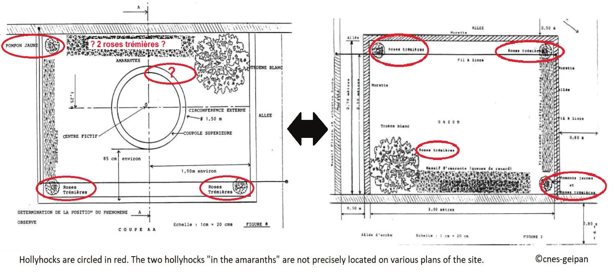
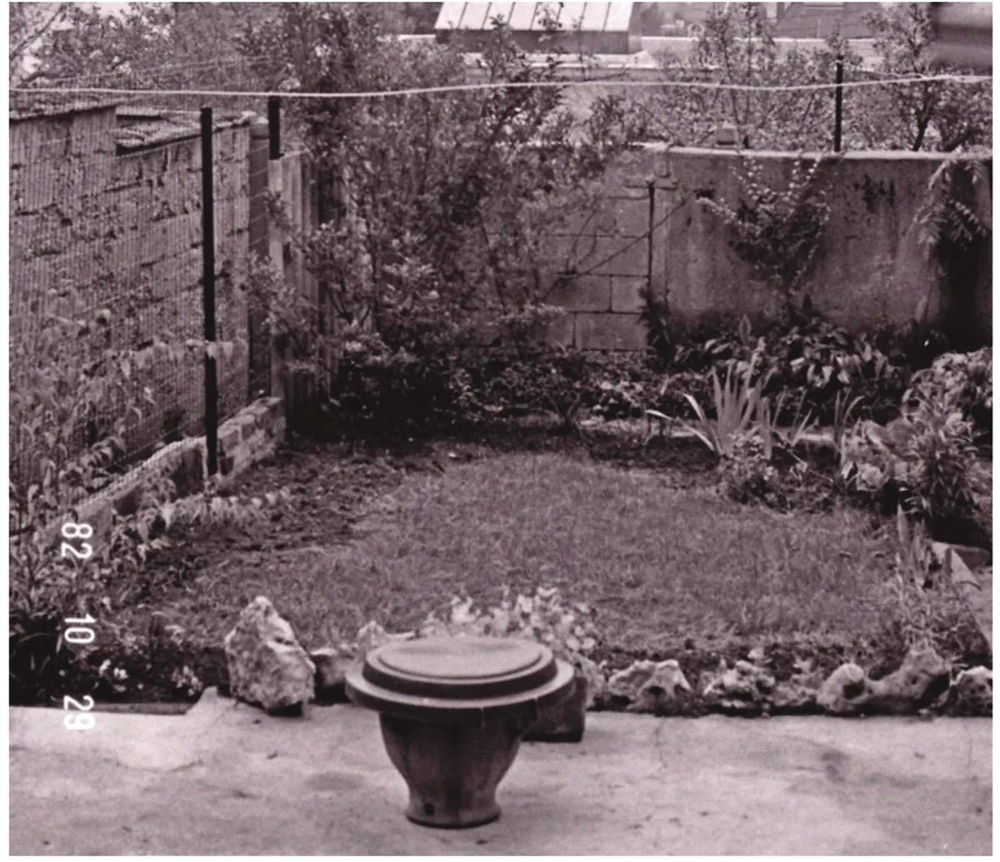
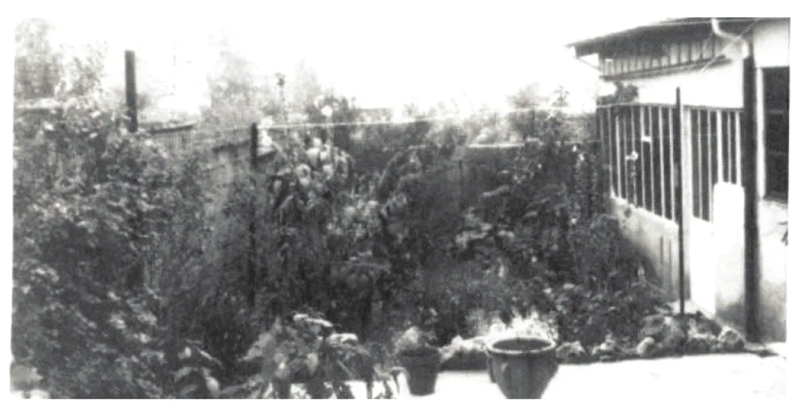
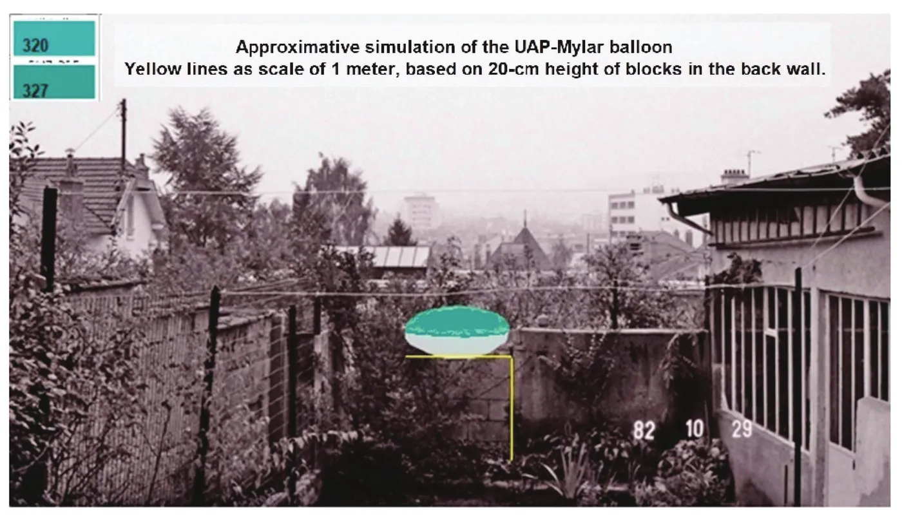
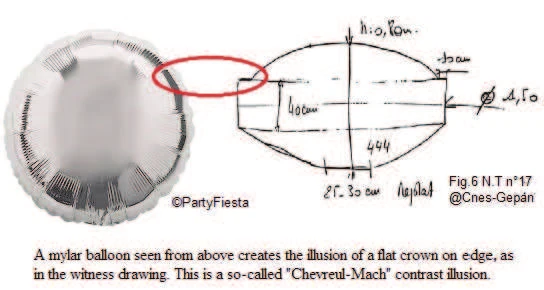

The “Amaranth” is a very famous French close encounter of the second kind that was officially investigated by GEPAN in . It is still generally considered “unexplained” because of its duration, the proximity of the witness and some alleged physical effects on plants. Working within the conceptual framework of the Psychosocial Model, we put forward in this article a mundane explanation. After looking for more than a decade for unpublished original documents, we have found new information that support the hypothesis that a Mylar balloon was the real cause. We present a coherent scenario and analyze the perceptual mechanism that led to this case. Based on those, we think that it should now be regarded as “probably explained.”
The “Amaranth”All the images extracted from NT17 are published here with the special authorization of the GEIPAN (private communication with the second author). They are all ©CNES/GEIPAN. is one of the most famous French UFO cases, considered by the Groupe d'Études des Phénomènes Aérospatiaux Non-identifiés (GEPAN)GEPAN is the ancestor () of the current Groupe d’Études et d'Information sur les Phénomènes Aérospatiaux Non-identifiés, or GEIPAN, a unit of the French space agency Centre National d’Études Spatiales (CNES). as being one of the strangest that they have ever investigated. This case takes its name for a plant that was chemically analyzed in the hope of finding tangible proof of a UFO landing. The claim is that the plants withered because of the proximity to the UFO. This Amaranth case has been classified by GEPAN in the category D of Unidentified Aerial Phenomena (UAP),We translate here “Phénomènes Aérospatiaux Non-identifiés (PAN)” used by the CNES as the English equivalent Unidentified Aerial Phenomena (UAP). that is “unexplained after investigation.” Working inside the theoretical framework of the Psychosocial Model Abrassart, J.-M.: Le Modèle Sociopsychologique du Phénomène Ovni: Un Cadre Conceptuel Interprétatif en Sciences Humaines, Louvain-la-Neuve, Presses Universitaires de Louvain, , we will discuss a possible mundane explanation for this case.
After looking for more than a decade for unpublished original documents, we have found information that supports the hypothesis that a Mylar balloon was the real cause. Previously, some claimed that it was impossible for a Mylar balloon to have stayed totally still and floating in mid-air for such a long period of time. After careful review of some new evidence available, we found that there was in fact a possible support in the garden at the time of the observation: some amaranthsOr maybe hollyhocks: it is impossible to know for sure at this point. were there that could have done the job. The witness did some gardening and pulled them up before the GEPAN investigator arrived, but their presence was still documented by the gendarmerie’sA military force with law enforcement duties among the civilian population in France. preliminary investigation.
Realizing this, we think now that the Mylar balloon hypothesis is a very strong candidate to explain this famous French case. These balloons, which still today deceive witnesses and experts, were still rare objects in the early s, and thus seldom observed and unrecognized. If the nickname “Amaranth” is given to this case in reference to alleged effects on the so-called dried flowers, the irony would be that these plants would be at the same time the mystery and the explanation!
After the previous critical review of the weaknesses in the investigation of the Amaranth case by D. Rossoni, É. Maillot, and É. Déguillaume Rossoni, D., Maillot, É. & Déguillaume, É.: Les Ovni du CNES: 30 Ans d’Études Officielles (1977-2007), Nantes, Book-e-book, , pp. 326-349 and due to the lack of verified elements supporting hypotheses, a UAP D classification still seemed acceptable but, with the possible mundane explanation proposed in this article, we do not think it is still warranted. This case perfectly illustrates that sometimes perceptual illusions can last a long time and transform mundane objects into something very strange and mysterious.
This is a very impressive case at face value. A summary of the official investigation was published in Note Technique n° 17 (NT17) and written by Jean-Jacques Velasco , who would become the director of GEPAN the same year.
: “Henri”Pseudonym used by GEPAN to protect the anonymity of the
witness. is 30 years old and a cell biology researcher. He lives in Laxou (Nancy district), in
Meurthe-et-Moselle (eastern France). He decides that day to do some gardening. At , Henri looks up
and sees something in the sky. A plane is the first thing that comes to his mind, but then he realizes that a UFO
is flying towards him. The bright spot becomes a round shape. It suddenly stops near him, levitating one meter above
the ground. Henri evaluates the diameter at 1.5 m at a height of 0.8 m.[Editor's note] In NT17,
0.80 m is the thickness (épaisseur
) of the object, not its height above the ground, which the
witness puts at un mètre environ du sol
. Henri goes to fetch his camera, but it does not
seem to work when he comes back. He then approaches the UFO and looks at it closely. He says Hello
to it in
different languages, but he gets no reply. At , the UFO flies away, just as silently as when it
arrived. Henri then gives his testimony to the gendarmerie (which
does a preliminary investigation from The GEPAN investigation
started .), which later leads to the full-on GEPAN
investigation.
Unfortunately, the “Amaranth” remains one of the rare cases where access to the original reportThe original report is different from the Note Technique. NT17 is only a summary with partial quotes from the statement and audio recordings. is still not possible on the GEIPAN online database. Éric Maillot (the first author of this paper) asked in a private communication with J. Paul Aguttes, the current director of the Groupe d’Études et d'Information sur les Phénomènes Aérospatiaux non identifies (GEIPAN), to explain the reason behind this. His answer was that priority has probably been given by his predecessors to the more recent unpublished online cases and its priority to process the testimonies that arrive regularly. According to him, since the original report dates to , it may be posted in the future, when someone takes the time to go back in the archives or “revisit” this UAP D. We think that, for such a prominent case, GEIPAN should make the effort of putting all the original pieces and report on their online database for further critical examination by the scientific community.
What made this case famous is that there were some alleged chemical alterations of the amaranths due to the presence of the UFO nearby. Some chemical analysis was made by the GEPAN team, but NT17 is in fact inconclusive on that matter: the plants’ leaves did wither, but it is impossible to know for sure if it is because of the presence of the UFO or simply because of the ordinary environmental condition at that time of the year. GEPAN also took some samples of the grass , but NT17 does not state why no results concerning the grass was ever published, despite samples correctly identified on two perpendicular axes (a methodology that wasn’t used for the Trans-en-Provence caseThe Note Technique n°16 is the one about this other very famous French case. Rossoni, D., Maillot, É. & Déguillaume, É. Rossoni, D., Maillot, É. & Déguillaume, É.: Les Ovni du CNES: 30 Ans d’Études Officielles (1977-2007), Nantes, Book-e-book, , pp. 296-316 also provides an in-depth criticism of the work done by GEPAN on this case.) and preservation in liquid nitrogen at -30 °C.[Editor's note] NT17 describes two steps: the second series of samples was carried in liquid nitrogen (about −196 °C) to Toulouse, then all samples were kept in a freezer at −30 °C from the morning of . For some reason, so far unknown to the public, only two amaranth samples (which were poorly preserved in the refrigerator at 4 °C) seem to have been ultimately analyzed.
Jean-Jacques Velasco stated in many interviews that the Amaranth case is one of the
best GEPAN investigations ever. For example, he said during a TV interview for ARTEARTE is a
European public service channel. that the Amaranth case and the Trans-en-Provence case show that these
phenomena interact with the environment
“Sciences et OVNI,” ARTE,
. In , he also
used the Amaranth case at the Pocantico Symposium to support the existence of “genuine UFOs” with physical effects on
the environment .
A skeptical investigator from the Comité Nord-Est des Groupes Ufologiques (CNEGU), Raoul Robé,Private communication with the first author. thinks that the Amaranth case could have been influenced by the movie La Soucoupe de Solitude, directed by Philippe Monnier (),It is a French adaptation of Theodore Sturgeon’s short story A Saucer of Loneliness. which was released around the same time. We are unconvinced because though the size and the proximity of the witness is indeed the same, the other details are different.
D. Based only on the information then available to the public, D. Rossoni, É. Maillot, and É. Déguillaume did a comprehensive critical review of the weaknesses in the investigation of the Amaranth case in their book Les OVNI du CNES, 30 Ans d’Études Officielles (1977-2007) Rossoni, D., Maillot, É. & Déguillaume, É.: Les OVNI du CNES, 30 Ans d’Études Officielles (1977-2007), Nantes, Book-e-book, .
l'avant-veille de notre arrivée), not the day before . It is suspicious since he is supposedly a
cell biology researcher and should have known that doing so would thwart the chemical analysis.
Since there is no hard proof at this point of alien visitations of the planet, the theoretical framework of the Psychosocial Model Abrassart, J.-M.: Le Modèle Sociopsychologique du Phénomène Ovni: Un Cadre Conceptuel Interprétatif en Sciences Humaines, Louvain-la-Neuve, Presses Universitaires de Louvain, posits that the best methodological approach of a UFO case is to look for mundane explanations. We will first briefly discuss here the hoax and the hallucination hypothesis.
The hoax hypothesis doesn’t seem very plausible for the Amaranth case, and, from a methodological point of view, we think it is better to explore all other options first. The reasons for rejecting the hoax hypothesis are as follows:
D. Rossoni, É. Maillot, and É. Déguillaume Rossoni, D., Maillot, É. & Déguillaume, É.: Les Ovni du CNES: 30 Ans d’Études Officielles (1977-2007), Nantes, Book-e-book, , pp. 326-349 argued for other possible explanations (hallucination or aura of an acephalgic migraine). There must be UFO cases that are explained by hallucinations Abrassart, J.-M.: “UFO Phenomenon and Psychopathology: A Case Study”, 58th Annual Convention of the Parapsychological Association, London, . Even if those are very rare, it would be the contrary that would be surprising. If there is so far no proof that aliens visit earth, there is ample evidence that hallucinations do happen. The fact that Henri is the only witness and that he could not manage to take a picture during such a long sighting gives credence to the hallucination hypothesis. Another argument in support of this idea is that Henri never tried to touch the UFO to see how it felt, even though it posed no apparent threat.
Nevertheless, the Psychosocial Model posits that most cases are explained by misinterpretation of a stimulus Abrassart, J.-M.: Le Modèle Sociopsychologique du Phénomène Ovni: Un Cadre Conceptuel Interprétatif en Sciences Humaines, Louvain-la-Neuve, Presses Universitaires de Louvain, . In other words, most cases are perceptual mistakes (illusions), not hallucinations.In psychiatry, if illusions are perceptive distortion of an objective stimulus, hallucinations are defined as perceptions without any stimulus. For that reason, we kept looking for a potential stimulus that could explain this case without invoking the hallucination hypothesis.
Our first idea was a two-color Mylar balloon already reported to GEIPAN as the misidentified source of the “pilot Fartek” case (Arc-sur-Tille (21), ).Eric Maillot, http://www.unice.fr/zetetique/articles/ovni_pilote.html (accessed ) and Les OVNI du CNES: 30 Ans d'Études Officielles (1977-2007) in chapter 6.2, “Varois et Chaignot.” The difficulties with this hypothesis in the “Amaranth” case are as follows:
If the testimony wasn’t the result of a memory reconstruction, and if we excluded the hoax and the hallucination, the only possible explanation left was a perceptual mistake. During an informal discussion about this case with a former GEIPAN director, Xavier Passot (director of GEIPAN from ), he mentioned to the first author the existence of two audio recordings made during the GEPAN investigation. The first author obtained permission from GEIPAN to listen to them. Despite their poor sound quality, we hear a witness sincerely disturbed by what he saw that day. He doesn’t sound like a prankster making a sophisticated hoax.
More surprisingly, the witness mentions, spontaneously and several times at different moments, a detail that obviously disturbs him: the hollyhocks. Here is the transcription of some passages of the audio recordings [our comments in brackets]:
(a) They [the Gendarmerie] came back several times on the issue [of] the environment [silence] if I had some [silence] tall hollyhocks and if they had moved. I answered it was certainly likely, but my attention was not focused on that.
(b) They asked me again about the environment [UAP], saying it’s big [words barely audible], it had to move. I did not say yes or no. They [the amaranths or hollyhocks] have certainly moved.NT17 states:
Mr. Henri mentioned that hollyhocks, very tall flowers on stems and therefore sensitive to the slightest breath of air, had at no time moved.This statement is incorrect: it is contradicted by the audio recordings by the same GEPAN.(c) They were in the four corners. They were two hollyhocks in the middle [of the amaranths].
(d) When he makes a list of all the other plants present in his garden for the investigators, he makes this
revealing slip of the tongue with two very different plants: there will also be hollyhocks, uh, arums that were
behind
.The “there will” (future tense) is strange here, but it’s the tense used by the
witness when he indicates on site the locations of all the plants that investigator Jean-Jacques
Velasco must note.
Why is the witness so concerned by those plants? We think that it is in reaction to the policeman standing in the intact site on . He must have noticed (and let the witness know he was surprised by it) that some long stems of hollyhocks had to be very close to the UAP, when the witness claimed that only the amaranths were affected. Indeed, the fact that the UFO would have affected the amaranths but not the hollyhocks doesn’t make much sense.
It was by trying to confirm that the Mylar balloon hypothesis was refuted that the first author finally understood
the importance of a small detail in NT17 : there were hollyhocks in the four corners of the
garden among the plants present in the garden, including 2 extra feet in the middle of the amaranths.
[Editor's note] “Feet” renders the French pieds, which here means “plants”: NT17
mentions deux pieds supplémentaires au milieu du massif d'amarante
. The witness will tell
the GEPAN investigators who arrived after the plants had been uprooted, that their size was about the height of
the witness, namely around 1.70 m.
Because the information that we have about it is contradictory, it is fair
to say that, at this point, we don’t know the exact location of these plants, but we do know for certain they were
present. Hollyhocks stems, of a man’s height, tend to bow toward the ground in late summer. Their two or more long and
strong foliated stems could thus have been the discrete support of a Mylar balloon.
On the drawing presented by GEPAN , the hollyhock plants closest to the UFO are there, but apparently not in their correct place. On top of that, they mysteriously disappear from figure 8 . Contrary to what we thought previously, the support for a Mylar balloon was there, but invisible on the Figure 8 plan or on the unusable photocopy of a photo of the site presented in NT17 .

NT17 indicates that GEPAN takes its intervention decision on .
They must have informed the witness
beforehand (or at least on the same day) and explained to him the purpose of the visit: to take additional plant
samples. NT17 also indicates that the witness pulled out the amaranths and the hollyhocks two days before
the
GEPAN investigation (which started ), thus the same day the decision was
made to go see the garden. These plants seemed to have been a problem for him and he decided (consciously or
unconsciously?) to not only remove some of the amaranth, but also all the big stems of hollyhocks. None remain on the
GEIPAN photos, not even those planted at the four corners of the walls, presumably far from where the UFO was. Yet
they were still blooming when the gendarmes came, according to their photos. The witness himself
confirmed the normal state of flowering of the other clusters of colorful amaranths, except for those that he
considers to be withered and close to the UFO.
In , the first author sent an email to GEIPAN asking if there are in their
archives usable photos taken by the gendarmerie and thus showing the intact site, before the uprooting. Xavier Passot (director of GEIPAN from ) then
kindly sends the only photos
(sic) which he thinks he has: four quality photos, but which are
those taken on by GEIPAN, not by the gendarmerie. They are, however,
instructive when compared closely with the plans given in NT17. One can clearly see the area of turned-over soil
where the amaranth plants were ripped out. Here again an important detail appears: this strip of soil does not form a
regular rectangle along the fence as falsely drawn in NT17.
On that picture (see below), it is possible to see clearly that part of the dirt is going towards the location of the UFO. We have here a clue of the position of the plants that were removed. It is now impossible to know for sure whether it was amaranths or hollyhocks that were at this exact position.

Any further investigation would have stopped if, at the end of , the first
author had not by chance seen on YouTube a clip of the “Planète+” tv show about UFOs.https://www.youtube.com/watch?v=KPTsdcEf3RU (accessed ). In that clip, Jacques Patenet (director
of GEIPAN from ) presents the case (0:19 to 0:45) and furtively shows a
sheet with three snapshots. After a frame-by-frame examination, the first author realized they were annotated as
taken by the gendarmerie on
! One of them shows a view of the
garden that looks very different, a lot less clean, from the one that can be seen on GEPAN’s photos and plans.
A new request was made in to Jean-Paul Aguttes (director of GEIPAN since ) to obtain these shots in high quality. The goal was to check if there were any plants or stems above the grass and below the position of the UFO. Jean-Paul Aguttes did transmit those three pictures but only in low quality and in PDF format. A subsequent request to get the negatives was not successful since it fell at a time of relocation of GEIPAN’s archives. However, the available images clearly corroborate the Mylar balloon hypothesis since it undeniably shows a small garden looking like a small “jungle” with stems and leaves where the UFO could have been. It is surprising that the GEPAN investigator, who was in possession of these photos, did not notice or report in NT17 this visual difference between the clean aspect of the garden when he came on site and the gendarmes’ pictures of the initial state of overflowing vegetation above the grass.

In , GEIPAN confirmed that it does not have other archives or photographs for this case. It seems surprising that the gendarmes on site only took three pictures, furthermore that they were in black and white. Perhaps there are other images that have not been used, a priori deemed not illustrative? It would be interesting for GEIPAN to search the Gendarmerie’s archives for potential negatives or other complementary prints (perhaps taken from another angle or clearer) likely to support or refute the hypothesis developed here.
Since we didn’t have anything better, we used one of these shots taken from the terrace, the only one of the three that gives an overview with measurable elements, to make a very approximate visual simulation (see below) of a circular Mylar balloon, a large model with two sides colored, integrated into the tight environment but without the initial dense vegetation.[Editor's note] The photo used for the simulation below bears the date stamp “82 10 29”, like the GEPAN photo above, and not the date of the gendarmerie photos ().

If you put yourself in the shoes of someone who cannot use the right words (hereafter put in parentheses), since
he does not know what the object really is, you will find that Henri’s description mostly matches the characteristics
of a Mylar balloon: the blue green lagoon
shades on the top and beryllium
underneath; the filled
aspect (inflated with gas), Plexiglas
and
metallic
or smooth surface,
logically described as a pretty object
(a balloon is decorative and
festive in nature), with moving effects neither liquid nor gel
that the witness struggles to describe as
internal or external,
and so on.
The witness overestimated the size of the object (1.50 m, when a large balloon is 0.91 m), but that can be explained by the fact that the object was more impressive in the narrow space of the little garden (3.4 m wide and enclosed between two walls).[Editor's note] The NT17 plan reproduced above (figure 3 of NT17) gives the garden a width of 3.90 m between its walls. It should be also noted that there are indeed green Mylar balloons matching the Pantone shade —bluish-green 320-327—chosen by the witness.
The only difference in description of the object lies in a detail of the UFO shape: the 40-cm vertical edge surmounted by a 10-cm flat outline at the top. A party balloon normally does not have thick straight edges or a flat surface. However, some photos of Mylar balloons show that such illusion of faceted surface, flat top or flat edge on the outline is possible due to an ordinary reflection effect.This is like the Mach bands illusion: named after physicist Ernst Mach (), this illusion exaggerates the contrast between edges of slightly different shades of grey as soon as they come in contact with each other by triggering edge-detection in the human visual system. This depends of course on the inflation, on the lighting angle, and on the observer’s perspective. The witness had only to observe such a reflection to then transform it in his drawing, during the reconstruction, into an actual detail of the structure (see illustration hereafter).

GEPAN itself conducted several psychological experiments to test and confirm the hypothesis that UFO witnesses add strange details to sightings in this manner. That perceptual psychology research has been published in NT10 GEPAN: Note Technique n°10: Les Phénomènes Aérospatiaux Non-Identifiés et la Psychologie de la Perception, Toulouse, GEPAN, .The person behind NT10 is Manuel Jimenez, who finished his PhD in psychology on that same subject the next year Jimenez, M.: Témoignage d’OVNI et Psychologie de la Perception, Thèse de Doctorat en Psychologie, Montpellier, Université Paul Valéry, .[Editor's note] NT10 is dated and the thesis : “the next year” does not match these dates.
NT17 tells us that the witness is not particularly interested in the UFO phenomenon, nor in science fiction
themes.
That may very well be true,
but we think that, because of cultural influences Abrassart, J.-M.: “The Influence of Culture on UFO Sightings”, Collecte et Analyse des
Informations sur les Phénomènes Aérospatiaux Non Identifiés (CAIPAN), Paris, , he cannot help himself, and associates what he sees with an alien
technological object, a process we call “saucerization” of the stimulus Abrassart, J.-M.: Le Modèle Sociopsychologique du Phénomène Ovni: Un Cadre Conceptuel Interprétatif en Sciences
Humaines, Louvain-la-Neuve, Presses Universitaires de Louvain, .
Indeed, a person need not have an interest in ufology or even in science
fiction to be culturally exposed to UFO mythologies and iconographies.
It seems inconceivable that a witness, supposedly a normal person of sound mind, could be the victim of a simple yet powerful illusion lasting for 20 minutes.The witness stated that he looked at his watch. Of course, we still cannot be sure that this duration is correct, and that Henri didn’t overestimate the time the UFO was in his garden. Lots of people would express incredulity at this argument. Yet as soon as you leave the context of the UFO phenomena, it is easy to demonstrate that it is, in fact, not unusual. There are indeed plenty of optical illusions that prove this Bach, M. & Poloschek, C. M.: “Optical Illusions”, Advances in Clinical Neuroscience & Rehabilitation (ACNR), 6(2), . You can look at them as much as you like, and the illusion will persist. If it is true that for some illusions it is possible to switch the perception (like for example the ambiguous image of the rabbit–duck illusion), there are also many known examples of visual illusions that persist in the long term, which we are unable to correct or dismiss from our perception.To give only one example of a persistent illusion, there was a photo of “oily legs” that went viral on Twitter in London, B.: Bizarre Optical Illusion Divides Social Media… So Can YOU Spot What Is Wrong with This Pair of Legs?, Mail Online, . There was no oil involved but only traces of white paint. Even when the correct explanation is given, it is difficult to unsee the illusion.
In ufology, many perceptual mistakes have been documented in the scientific literature. For example, perceptual mistakes with a well-known object, the Moon, often last more than twenty minutes Maillot, E., Munsch, G., Danizel, L., Dumas, I., Fournel, P., Robé, R. & Abrassart, J.-M.: “Mistaking the Moon for an Alien Spacecraft: The ‘Saros Operation’”, Anomaly: Journal of Research into the Paranormal, 50, pp. 8-17, . The lack of hard proof in favor of the extraterrestrial hypothesis since (when ufological investigations started) clues us to the fact that human beings indeed make those perceptual mistakes, since that is the only way to account for some testimonies if there are no extraterrestrial spaceships visiting us.The only other alternative would be the paranormal hypothesis Ouellet, E.: Illuminations: The UFO Experience as a Parapsychological Event, San Antonio (Texas), Anomalist Books, . The problem with this approach is that it is unfalsifiable. Rather, an unfalsifiable hypothesis is not wrong, it’s just unscientific. If parapsychologists don’t find a way to empirically test the paranormal hypothesis for explaining the UFO phenomena, the psychosocial model is to be preferred by the scientific community Abrassart, J.-M.: “Do We Need the Paranormal to Explain the UFO Phenomenon? A Review of ‘Illuminations: The UFO Experience as Parapsychological Event’ by Eric Ouellet”, Paranthropology, 7(1), , pp. 60-61.
As in magic shows, once the illusion takes hold, we do not understand reality anymore, and accept that impossible
things may happen. Yet the magic tricks used are often basic. Let’s take the example of a street levitation trick in
which someone is holding a stick in his hand and seems to be sitting calmly in the air.This street
levitation trick is often seen in European markets nowadays. It is different from levitation tricks in which the
magician seems to be walking in the air, like the one done by Criss Angel for
example. The performer who levitates in public is like a UFO for the spectators because they do not see any
support likely to bear his weight. The illusion persists even though they can go around the scene, look at it from
different angles, or lean in to look very closely. Our brain refuses to see the stick as a logical support, with its
remaining part partially hidden. Exactly as the witness from Nancy
did with the UFO in his little garden: Henri just refused to see the surrounding plant stems as the supports of a very
light object when he convinced himself that the UFO was a manufactured and heavy object that nevertheless rested at
one meter
above the ground, without a visible propulsion system, noise, or exhaust. This mental representation,
though incorrect, could no longer leave his brain. It was impossible to get rid of it without touching the object,
which he says he did not dare do.
This cumulative case we are putting together for the Mylar balloon hypothesis is strengthened by the data of the
weather archives for Nancy. Seeing this balloon coming down towards him, probably under-inflated in a cold morning
atmosphere, the witness is immediately convinced that a heavy vehicle brakes
while going down towards his
garden and will make a crater or a hole.
He said during the investigation: I thought it was really
something that would fall into the earth.
Frightened, he steps back toward his home. When the object stabilizes
quietly above the ground and remains motionless, he does not imagine for a moment that it is ultralight, discreetly
lying down flat on the long stems and leaves of the present plants (hollyhocks or amaranths), sheltered by four walls
from the weak wind (maximum 2 m/s) in the narrow garden.
When we investigate anomalies, environmental factors often add complexity to the case. Here, it is the cramped space combined with the weather conditions. After 20 minutes of stillness in the midday sun, the balloon warms up little by little between the walls of the garden and therefore expands, again becoming able to fly at the slightest turbulence of air between the houses.
The weather dataNT17 , chapter VIII.1. support this scenario, with
the temperature changing from 9 to 18 °C between . During the same period, there
is are regular decreases in the high humidity (97 to 72% relative humidity) and the atmospheric pressure (1016,4 to
1011,6 hPa) that favor the expansion necessary for the take-off. A weak wind (11 to 7 km/h) coming from
south-southeast is present.[Editor's note] 11 km/h is about 3 m/s, more than the maximum 2
m/s
given above. After a whole morning totally covered with clouds (8 oktas), around noon the sky clears
quickly and reveals the sun all afternoon (from 0 to 2 oktas).
The witness, who by then had moved to his terrace, and not near the UAP, may not have felt the draft that triggered the balloon’s ascent. The descent is logically described as slower than the so-called fast (but not lightning-like) rise.Note there was no simulation of mental timing performed by GEPAN for these two phases. The witness then loses sight of the balloon that goes up and away until it is no longer visible in a bright blue sky.
Henri then succumbs to the influence of the ufological mythology of the flying object which acts on its environment with physical effects. He will thus look for a trace left by the object on his amaranths, of which only a few floral clusters remain, faded and parched. Yet all experienced gardeners know that this is quite normal and natural in autumn.This is paradoxically what the witness gives to the GEPAN investigators as the reason for his unwanted uprooting of all amaranths and other plants: the replacement of withered and dried flowers at the end of the season.
The witness told GEPAN: This is not the kind of thing that comes in your garden like a soccer ball.
Yet a
festive balloon (from a local event or a birthday party) of Mylar that would have come loose from its thread could
very well be at the origin of this case that has become a modern classic in ufology. There are many other UAPs with a
similar cause in the GEPAN database: one of them named “Lac d’Opale”For more information about
this case in the GEIPAN database “« LAC D’OPALE (LE) » ESTAING (65) 18.07.1989”: https://www.cnes-geipan.fr/index.php/fr/cas/1989-07-01179
(accessed ). has only recently () been reclassified from D (unexplained) to A (identified) as predicted in the book Les OVNI du CNES: 30 Ans d'Études Officielles (1977-2007)
Rossoni, D., Maillot, É. & Déguillaume, É.: Les OVNI du CNES: 30 Ans d'Études
Officielles (1977-2007), Nantes, Book-e-book, , p. 163. Other
cases explained by the Mylar hypothesis are the “Dora” case (investigated by the CNEGU),About the
Dora case, see the interview of Francine Cordier on the Scepticisme
Scientifique (French-speaking podcast), episode #82: https://www.scepticisme-scientifique.com/episode-82-le-cas-dora/
(accessed ). the UAP A of Voreppes (38),For more
information about this case in the GEIPAN database “VOREPPE (38) 06.09.1998”: https://www.cnes-geipan.fr/fr/cas/1998-09-01754?
(accessed ). the picture of the UAP of Chambley (54),For more
information about this case in the GEIPAN database “CHAMBLEY-BUSSIERES (54) 05.08.2007”: https://www.cnes-geipan.fr/fr/cas/2007-08-02247
(accessed ). and so on.
Being able to fly for several days, depending on local winds and turbulence, Mylar balloon hypotheses are obviously difficult to prove beyond any doubt, absent cases with clear photos or videos. Nevertheless, we think we have built a convincing cumulative argument that this explanation is correct for the Amaranth case. As with other, older, UFOs, the thorough research for information unknown to the public (here photos of the site and audio recordings of the witness) will have made it possible, more than 30 years after the fact, to support as strongly as feasibly possible a new explanatory hypothesis. It is true that the Mylar balloon hypothesis does not explain the famous detail of the sudden raising of 15 cm of grass under the UAP but a turbulence of wind or a brief whirlwind of air between the walls may have been enough to stir up a blade of grass. It is up to everyone to evaluate how much weight should be given to this in the final explanatory probabilistic balance.
If CNES was to reclassify this case as UAP type B “probably identified,” this action would probably generate lots of protests in the French UFO community, because of the status this case has acquired in the UFO mythology at this point. For this reason, this alleged UFO will probably remain a UAP D1 (strong strangeness and low consistency) even if it has a very likely explanation that should allow us to reclassify it.
This case reminded us of an important investigation rule: you only need one important item of information missing from a report to create a case that will become famous and will endure a long time in the ufological literature. It also illustrates the fact that sometimes perceptual illusions can endure and transform in the witnesses’ mind a mundane object into something very strange and mysterious.